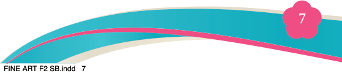
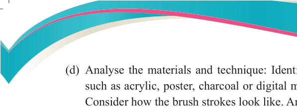
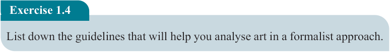
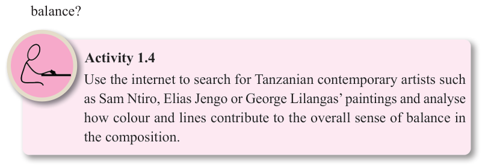

Fine Art for Secondary Schools

7

Student’s Book Form Two



(d) Analyse the materials and technique: Identify the types of materials used, such as acrylic, poster, charcoal or digital media and how they are applied.
Consider how the brush strokes look like. Are they thick or smooth?

(e) Analyse the overall composition: Examine how effectively the artist considers
the way elements and principles interact to create a cohesive and aesthetically
pleasing artwork. Does the artwork feel lively and dynamic or calm, chaotic or organised? Does the arrangement of shapes and colours create a sense of balance?

Activity 1.4
Use the internet to search for Tanzanian contemporary artists such
as Sam Ntiro, Elias Jengo or George Lilangas’ paintings and analyse
how colour and lines contribute to the overall sense of balance in the composition.
Exercise 1.4
List down the guidelines that will help you analyse art in a formalist approach.
Functionalism theory of art
The central assumption in the functionalism theory (also referred to as
instrumentalism) is that an artwork’s value lies not only in its beauty of expressive
qualities but also in its alignment with its intended use or function. Unlike decorative
or abstract art, a functionalist art is created to serve a purpose. It is used as an instrument or a tool that can be useful for explaining, influencing, fulfilling or
clarifying matters within the society. Such matters can be political, social, religious,
utilitarian or educational.
A functionalist art includes various forms which combine both visual appeal and beauty with an intended purpose in society. The functionalist art ensures that not only do designs appeal visually but also functionally. Illustrations, posters, fliers and cartoons are some types of functionalist art, each of these focuses on how it serves a purpose to improve daily life experiences while maintaining a striking visual presence
04/08/2025 13:54